Généré le 2026-07-15 21:29 · manifest /home/max/dev/canopaname/app/src/main/assets/species-photos.json · outil tools/build_photos_cascade_preview.py
Page de vérification humaine, pas un artefact de build. Objectif : repérer d'un coup d'œil les mauvais taxons, images hors-sujet ou licences douteuses parmi les photos récupérées par la cascade Wikidata P18 / iNaturalist. Chaque vignette est référencée depuis app/src/main/assets/species-photos/ (jamais inlinée).
Photos S10
342
sources cascade
Wikimedia Commons
184
iNaturalist
158
Licences
CC BY 213 · CC0 50 · Domaine public 79
Poids total
25.1 Mo
WebP sur disque
Trous comblés
497/665
S9 155 + S10 342
Wikimedia Commons (184 photo(s))
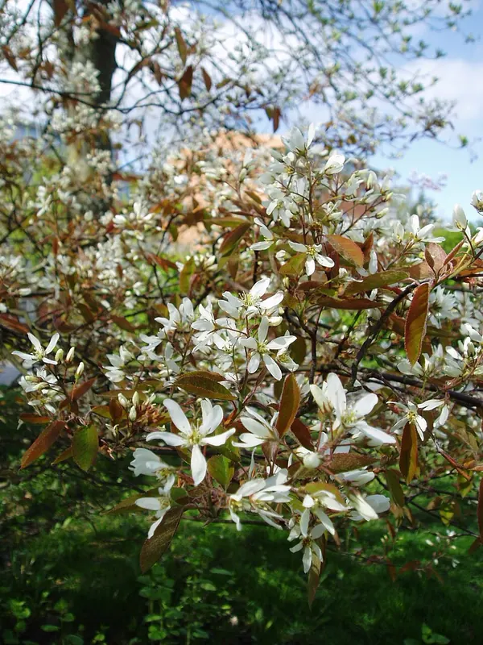
sk 14 · 14-0.webpAmelanchier x lamarckiiAmélanchier de Lamarck · AmélanchierCC BYUdo Schröterpage source ↗
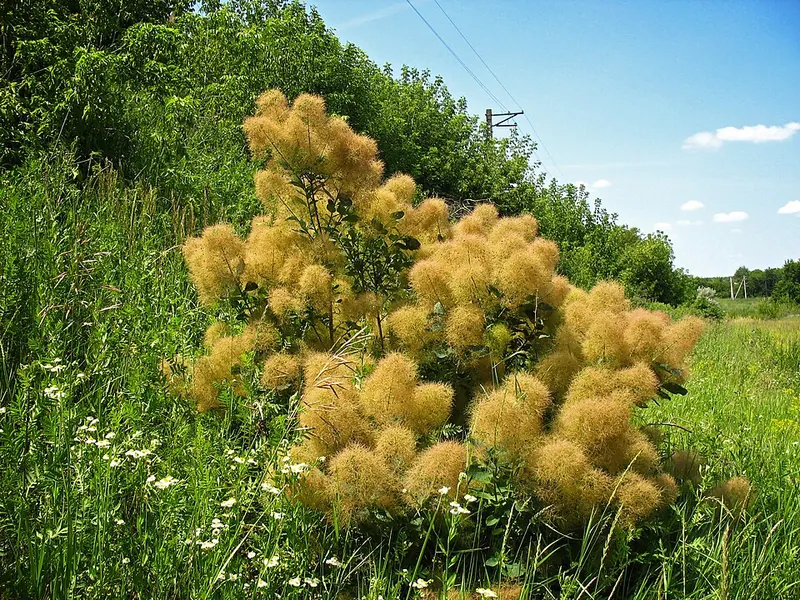
sk 34 · 34-0.webpCotinus coggygriaSumac fustet · Arbre à perruqueCC0LIght Dimpage source ↗
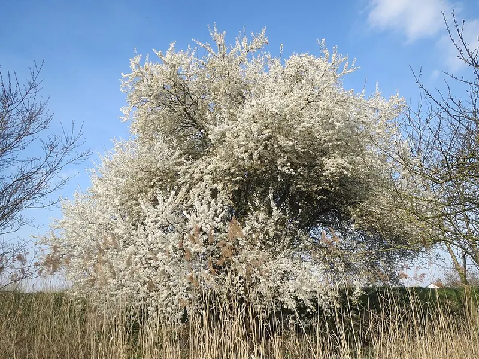
sk 59 · 59-0.webpPrunus cerasiferaPrunier pourpre · Prunier à fleursCC0AnRo0002page source ↗
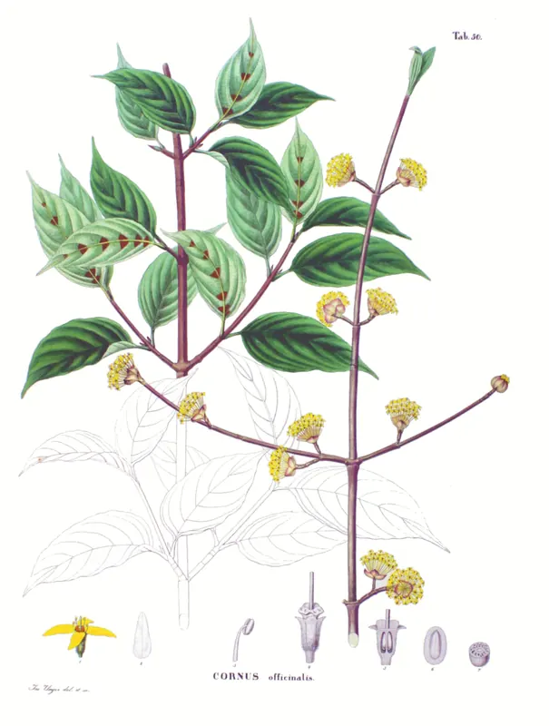
sk 81 · 81-0.webpCornus officinalisCornouiller officinal · CornouillerDomaine publicPhilipp Franz von Siebold and Joseph Gerhard Zuccarinipage source ↗
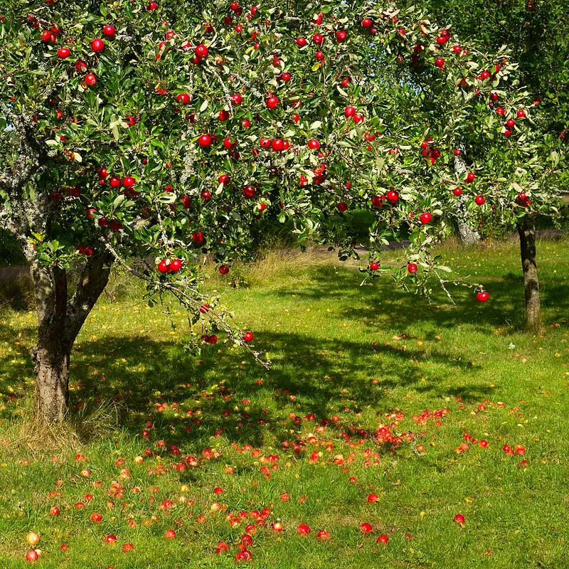
sk 88 · 88-0.webpMalus domesticaPommier domestique · Pommier à fruitsCC0W.carterpage source ↗
sk 154 · 154-0.webpCordyline australisCordylineDomaine publicKahuroapage source ↗
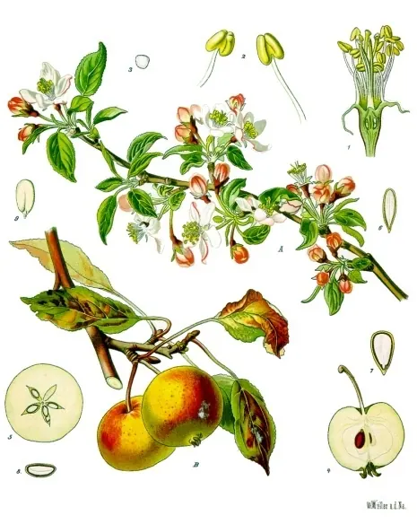
sk 162 · 162-0.webpMalus pumilaPommier à fruits (M. pumila) · Pommier à fruitsDomaine publicFranz Eugen Köhler, Köhler's Medizinal-Pflanzenpage source ↗
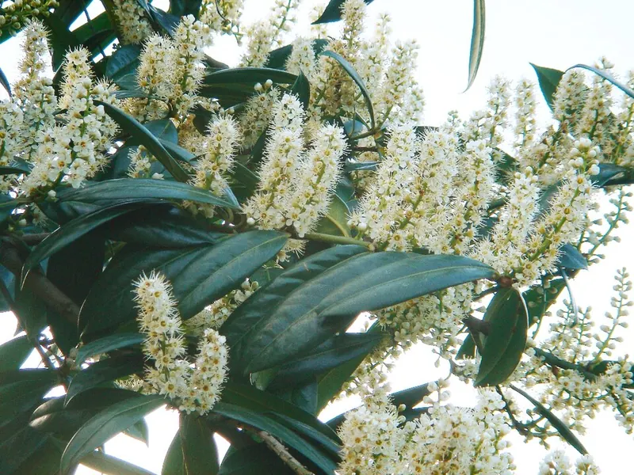
sk 166 · 166-0.webpPrunus laurocerasusLaurier palme · Laurier du caucaseDomaine publicKarduelispage source ↗
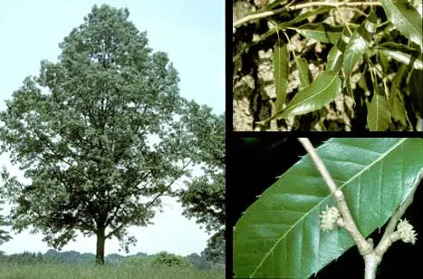
sk 205 · 205-0.webpQuercus acutissimaChêne du Japon · ChêneDomaine publicWikimedia Commonspage source ↗
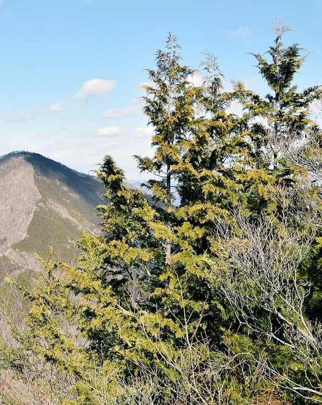
sk 209 · 209-0.webpChamaecyparis pisiferaCyprès de Sawara · Faux-cyprèsCC BYOriginal: Raita Futo from Tokyo, Japan; this edit: User:MPFpage source ↗
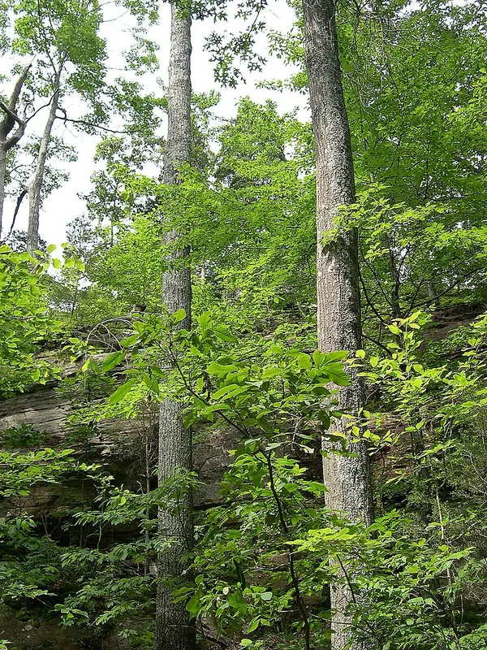
sk 213 · 213-0.webpQuercus coccineaChêne écarlate · ChêneCC BYJay Sturner from USApage source ↗
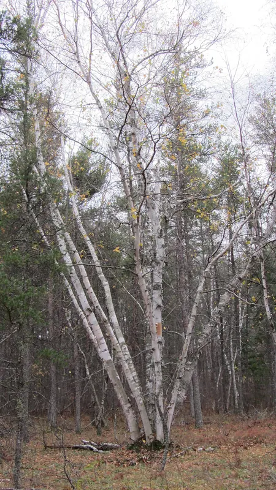
sk 214 · 214-0.webpBetula papyriferaBouleau (B. papyrifera) · BouleauCC BYRobert Linsdell from St. Andrews, Canadapage source ↗
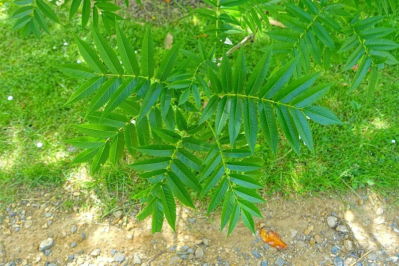
sk 220 · 220-0.webpSorbus ulleungensisSorbier (S. ulleungensis) · SorbierCC0Daderotpage source ↗
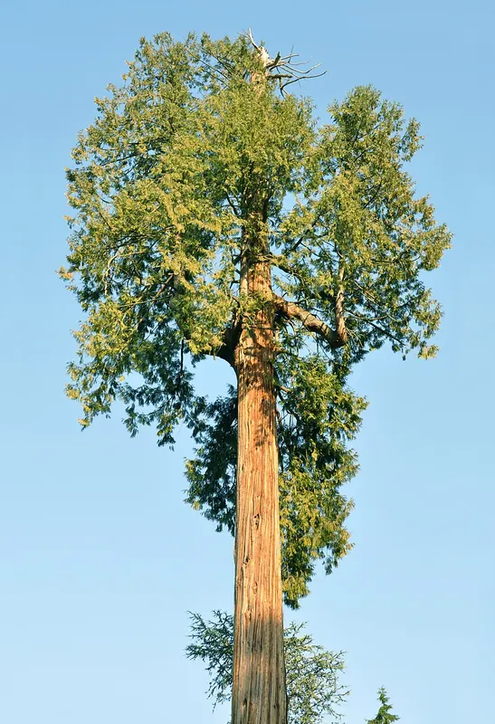
sk 225 · 225-0.webpThuja plicataThuya géant · ThuyaCC BYabdallahh from Montréal, Canadapage source ↗
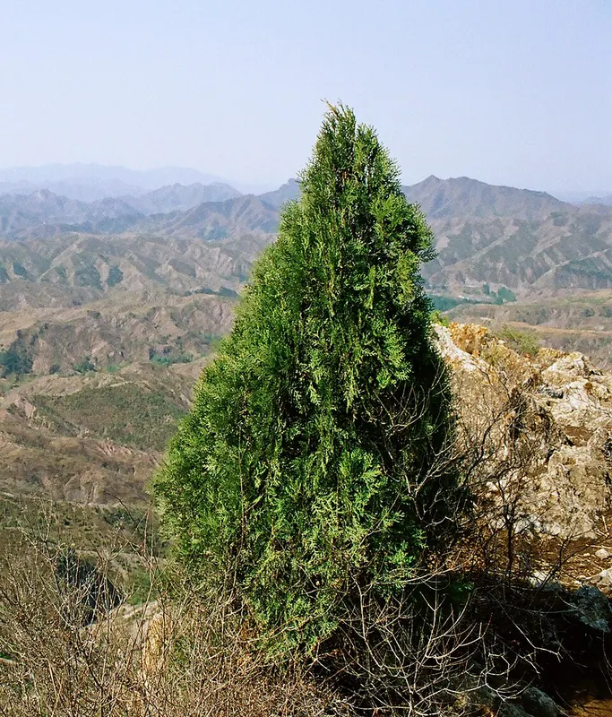
sk 231 · 231-0.webpPlatycladus orientalisThuya de Chine · ThuyaCC BYyeowatzup at Flickrpage source ↗
sk 241 · 241-0.webpAcacia dealbataMimosa d'hiver · MimosaCC BYDonald Hobern from Copenhagen, Denmarkpage source ↗
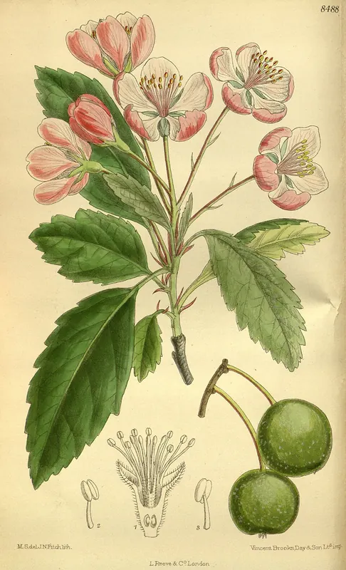
sk 244 · 244-0.webpMalus ioensisPommetier des prairies · Pommier à fleursDomaine publicM.S. del, J.N.Fitch , lith.page source ↗
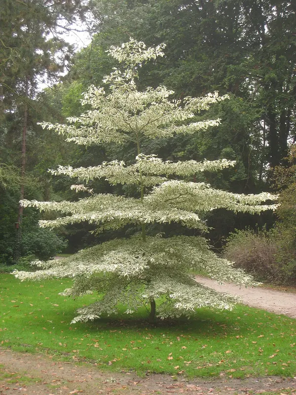
sk 250 · 250-0.webpCornus controversaCornouiller des pagodes · CornouillerDomaine publicDaderotpage source ↗
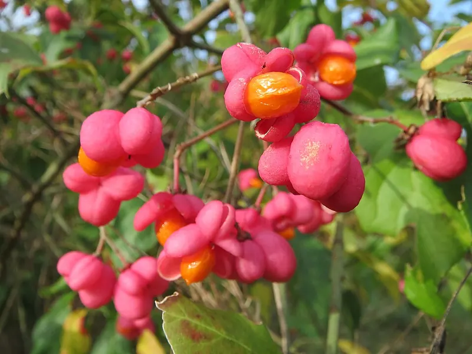
sk 253 · 253-0.webpEuonymus europaeusFusain d'Europe · FusainCC0AnRo0002page source ↗
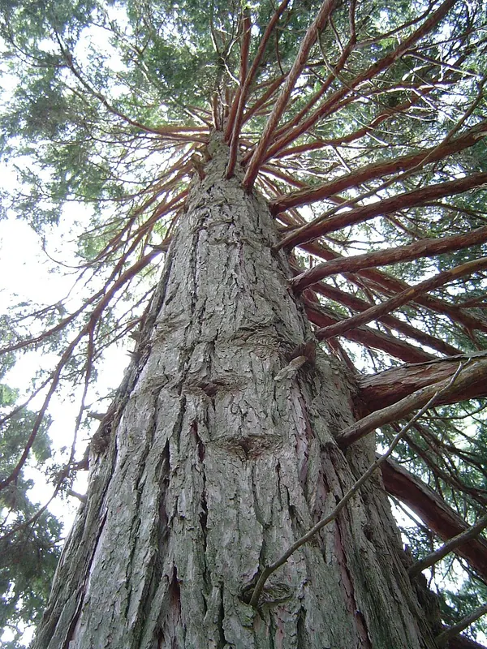
sk 258 · 258-0.webpCalocedrus decurrensCèdre blanc de Californie · LibocèdreCC BYThe original uploader was Geographer at English Wikipedia .page source ↗
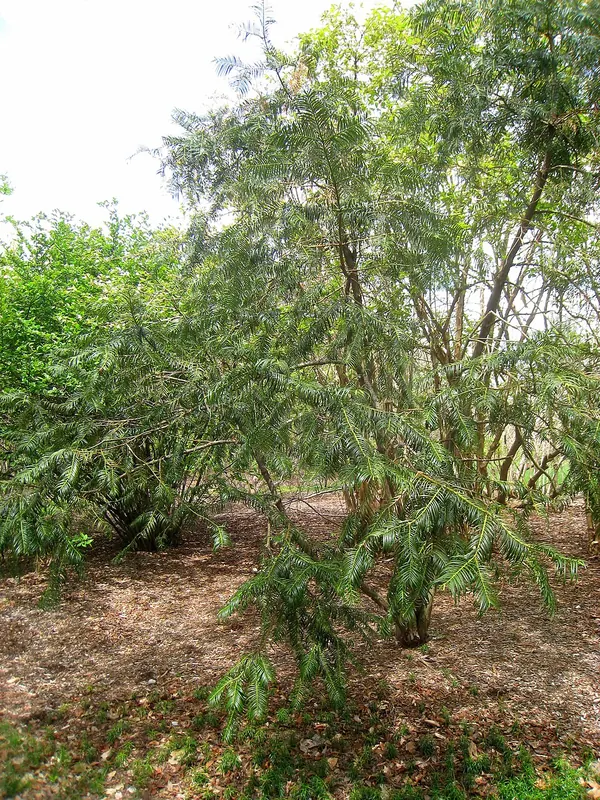
sk 259 · 259-0.webpCephalotaxus fortuneiCéphalotaxe de Fortune · CéphalotaxeDomaine publicDaderotpage source ↗
sk 12 · 12-0.webpEhretia dicksoniiCabrillet (E. dicksonii) · CabrilletCC0no rights reserved, uploaded by 葉子page source ↗sk 20 · 20-0.webpChamaecyparis lawsonianaCyprès de Lawson · Faux-cyprèsCC BY(c) John Rusk, some rights reserved (CC BY)page source ↗sk 33 · 33-0.webpLaburnum anagyroidesCytise aubour · CytiseCC BY(c) Daniel Cahen, some rights reserved (CC BY), uploaded by Daniel Cahenpage source ↗sk 36 · 36-0.webpLigustrum japonicumTroène du Japon · TroëneCC BY(c) Ashwin Srinivasan, some rights reserved (CC BY), uploaded by Ashwin Srinivasanpage source ↗sk 39 · 39-0.webpPhillyrea latifoliaFilaire à feuille large · FilaireCC BY(c) Drepanostoma, some rights reserved (CC BY), uploaded by Drepanostomapage source ↗sk 87 · 87-0.webpPrunus lusitanicaLaurier du PortugalCC0no rights reserved, uploaded by José Luis Camañopage source ↗sk 94 · 94-0.webpPrunus serrulataCerisier du Japon · Cerisier à fleursCC0no rights reserved, uploaded by Jenny Christiansonpage source ↗sk 106 · 106-0.webpCupressus sempervirensCyprès commun · CyprèsCC BY(c) Manuel Schwarz, some rights reserved (CC BY), uploaded by Manuel Schwarzpage source ↗sk 127 · 127-0.webpSabal minorPalmier (S. minor) · PalmierCC BY(c) Larry D. Moore, some rights reserved (CC BY)page source ↗sk 143 · 143-0.webpQuercus palustrisChêne des marais · ChêneCC BY(c) Sandy Wolkenberg, some rights reserved (CC BY), uploaded by Sandy Wolkenbergpage source ↗sk 147 · 147-0.webpUlmus pumilaOrme nain · OrmeCC BY(c) Steve Matson, some rights reserved (CC BY), uploaded by Steve Matsonpage source ↗sk 150 · 150-0.webpAcer palmatumÉrable palmé · ErableCC BY(c) Katja Schulz, some rights reserved (CC BY)page source ↗sk 163 · 163-0.webpSalix rosmarinifoliaSaule à feuilles de romarin · SauleCC BY(c) Eugene Popov, some rights reserved (CC BY), uploaded by Eugene Popovpage source ↗sk 178 · 178-0.webpQuercus phillyreoidesChêne (Q. phillyreoides) · ChêneCC BY(c) Joseph Aubert, some rights reserved (CC BY), uploaded by Joseph Aubertpage source ↗sk 182 · 182-0.webpRobinia viscosaRobinier visqueux · RobinierCC BY(c) Saskia, some rights reserved (CC BY), uploaded by Saskiapage source ↗sk 186 · 186-0.webpPicea pungensÉpicéa bleu · EpicéaCC BY(c) Lyrae, some rights reserved (CC BY), uploaded by Lyraepage source ↗sk 191 · 191-0.webpAcer davidiiÉrable du père David · ErableCC BY(c) Clive Freedman, some rights reserved (CC BY), uploaded by Clive Freedmanpage source ↗sk 193 · 193-0.webpZelkova sinicaOrme de Sibérie (Z. sinica) · Orme de SibérieCC BY(c) Andrew Conboy, some rights reserved (CC BY), uploaded by Andrew Conboypage source ↗sk 198 · 198-0.webpPrunus domesticaPrunier européen · Prunier à fruitsCC BY(c) Barry Walter, some rights reserved (CC BY), uploaded by Barry Walterpage source ↗sk 203 · 203-0.webpPrunus armeniacaArmeniaca vulgaris · AbricotierCC BY(c) etw, some rights reserved (CC BY)page source ↗sk 208 · 208-0.webpPinus wallichianaPin de l'Himalaya · PinCC BY(c) Robin Abraham, some rights reserved (CC BY)page source ↗sk 227 · 227-0.webpThuja occidentalisThuya occidental · ThuyaCC BY(c) botanygirl, some rights reserved (CC BY), uploaded by botanygirlpage source ↗sk 228 · 228-0.webpAcer buergerianumÉrable trident · ErableCC0no rights reserved, uploaded by 葉子page source ↗sk 229 · 229-0.webpHalesia carolinaArbre aux cloches d'argent · HalesiaCC BY(c) Michael J. Papay, some rights reserved (CC BY), uploaded by Michael J. Papaypage source ↗sk 232 · 232-0.webpx Chitalpa tashkentensisChitalpaCC BY(c) Wendy Cutler, some rights reserved (CC BY)page source ↗sk 235 · 235-0.webpAcer rufinerveÉrable rufinerve · ErableCC BY(c) Yoshihiro Tokue, some rights reserved (CC BY), uploaded by Yoshihiro Tokuepage source ↗sk 240 · 240-0.webpPopulus deltoidesPeuplier deltoïde · PeuplierCC BY(c) Sandy Wolkenberg, some rights reserved (CC BY), uploaded by Sandy Wolkenbergpage source ↗sk 257 · 257-0.webpAcer triflorumErable (A. triflorum) · ErableCC BY(c) Andrew Conboy, some rights reserved (CC BY), uploaded by Andrew Conboypage source ↗sk 260 · 260-0.webpMalus floribundaPommier à fleurs (M. floribunda) · Pommier à fleursCC BY(c) Muki Haklay, some rights reserved (CC BY), uploaded by Muki Haklaypage source ↗sk 264 · 264-0.webpAcer capillipesÉrable jaspé de rouge · ErableCC BY(c) Marco Mussita, some rights reserved (CC BY), uploaded by Marco Mussitapage source ↗sk 271 · 271-0.webpCrataegus x mediaAubépine (C. media) · AubépineCC BY(c) Daniel Cahen, some rights reserved (CC BY), uploaded by Daniel Cahenpage source ↗sk 275 · 275-0.webpCydonia oblongaCognassier de Provence · CognassierCC0no rights reserved, uploaded by flamelilypage source ↗sk 277 · 277-0.webpCrataegus apricaAubépine (C. aprica) · AubépineCC BY(c) Kristály Cravens-Liszak, some rights reserved (CC BY), uploaded by Kristály Cravens-Liszakpage source ↗sk 279 · 279-0.webpPyrus salicifoliaPoirier à feuilles de saule · Poirier à fleursCC0no rights reserved, uploaded by Piermario Maculanpage source ↗sk 286 · 286-0.webpPinus strobusPin Weymouth · PinCC BY(c) Forest and Kim Starr, some rights reserved (CC BY)page source ↗sk 288 · 288-0.webpCornus sanguineaCornouiller sanguin · CornouillerCC BY(c) Jason Grant, some rights reserved (CC BY), uploaded by Jason Grantpage source ↗sk 293 · 293-0.webpQuercus phellosChêne à feuilles de saule · ChêneCC BY(c) Katja Schulz, some rights reserved (CC BY)page source ↗sk 296 · 296-0.webpQuercus bicolorChêne bicolore · ChêneCC BY(c) Kristine Paulus, some rights reserved (CC BY)page source ↗sk 317 · 317-0.webpLarix x marschlinsiiMélèze (L. marschlinsii) · MélèzeCC BY(c) S. Rae, some rights reserved (CC BY)page source ↗sk 328 · 328-0.webpMaclura tricuspidataCudranierCC BY(c) Cheng-Tao Lin, some rights reserved (CC BY), uploaded by Cheng-Tao Linpage source ↗sk 334 · 334-0.webpBischofia javanicaBischofia (B. javanica) · BischofiaCC0no rights reserved, uploaded by 葉子page source ↗sk 335 · 335-0.webpPinus pinasterPin maritime · PinCC BY(c) Duarte Frade, some rights reserved (CC BY), uploaded by Duarte Fradepage source ↗sk 337 · 337-0.webpWollemia nobilisPin Wollemi · PinCC0no rights reserved, uploaded by Andra Waagmeesterpage source ↗sk 342 · 342-0.webpCephalotaxus harringtoniaPin à queue de vache · CéphalotaxeCC BY(c) Cheng-Te Hsu, some rights reserved (CC BY), uploaded by Cheng-Te Hsupage source ↗sk 350 · 350-0.webpLigustrum sinenseTroène de Chine · TroeneCC BY(c) James H. Miller, USDA Forest Service, Bugwood.org, some rights reserved (CC BY)page source ↗sk 351 · 351-0.webpPinus mugoPin mugo · PinCC BY(c) jthorngren, some rights reserved (CC BY), uploaded by jthorngrenpage source ↗sk 377 · 377-0.webpZanthoxylum simulansPoivrier (Z. simulans) · PoivrierCC0no rights reserved, uploaded by 葉子page source ↗sk 378 · 378-0.webpAcer japonicumÉrable du Japon · ErableCC BY(c) Marco Mussita, some rights reserved (CC BY), uploaded by Marco Mussitapage source ↗sk 382 · 382-0.webpAraucaria araucanaAraucaria du Chili · AraucariaCC BY(c) Francisco E. Fonturbel, some rights reserved (CC BY), uploaded by Francisco E. Fonturbelpage source ↗sk 385 · 385-0.webpCorylus maximaNoisetier de Lambert · NoisetierCC BY(c) Manuel M. V., some rights reserved (CC BY)page source ↗sk 386 · 386-0.webpSassafras albidumLaurier des IroquoisCC BY(c) Katja Schulz, some rights reserved (CC BY)page source ↗sk 394 · 394-0.webpQuercus dentataChêne (Q. dentata) · ChêneCC BY(c) Kim, Hyun-tae, some rights reserved (CC BY), uploaded by Kim, Hyun-taepage source ↗sk 397 · 397-0.webpMagnolia liliifloraMagnolia à fleurs de lis · MagnoliaCC BY(c) m. m. v., some rights reserved (CC BY)page source ↗sk 398 · 398-0.webpCunninghamia lanceolataCunninghamia (C. lanceolata) · CunninghamiaCC BY(c) Forest and Kim Starr, some rights reserved (CC BY)page source ↗sk 406 · 406-0.webpPyrus pyrifoliaPomme de Corée · Poirier à fruitsCC BY(c) Forest and Kim Starr, some rights reserved (CC BY)page source ↗sk 412 · 412-0.webpNothofagus antarcticaÑire · NothofagusCC BY(c) cstobie, some rights reserved (CC BY), uploaded by cstobiepage source ↗sk 413 · 413-0.webpCrataegus x mordenensisAubépine (C. mordenensis) · AubépineCC0no rights reserved, uploaded by Marc-Aurèle Valléepage source ↗sk 419 · 419-0.webpPinus radiataPin de Monterey · PinCC BY(c) Forest and Kim Starr, some rights reserved (CC BY)page source ↗sk 421 · 421-0.webpCastanea dentataChâtaignier d'Amérique · ChâtaignierCC BY(c) Bob MacInnes, some rights reserved (CC BY)page source ↗sk 422 · 422-0.webpAmelanchier alnifoliaAmélanchier à feuilles d'aulne · AmélanchierCC BY(c) Sam Kieschnick, some rights reserved (CC BY), uploaded by Sam Kieschnickpage source ↗sk 423 · 423-0.webpDiospyros kakiFiguier caque · PlaqueminierCC BY(c) Marco Mussita, some rights reserved (CC BY), uploaded by Marco Mussitapage source ↗sk 428 · 428-0.webpTsuga canadensisPruche du Canada · TsugaCC BY(c) Ian Manning, some rights reserved (CC BY), uploaded by Ian Manningpage source ↗sk 436 · 436-0.webpFirmiana simplexParasol chinois · SterculierCC0no rights reserved, uploaded by 葉子page source ↗sk 440 · 440-0.webpPhillyrea angustifoliaDaradèu · FilaireCC0no rights reserved, uploaded by Peter de Langepage source ↗sk 444 · 444-0.webpCornus kousaCornouiller du Japon · CornouillerCC BY(c) Σ64, some rights reserved (CC BY)page source ↗sk 445 · 445-0.webpZanthoxylum piperitumPoivre sansho · PoivrierCC BY(c) WATANABE Hitoshi 渡辺仁, some rights reserved (CC BY), uploaded by WATANABE Hitoshi 渡辺仁page source ↗sk 446 · 446-0.webpPrunus davidianaPêcher sauvage · PêcherCC BY(c) Yi CHEN, some rights reserved (CC BY), uploaded by Yi CHENpage source ↗sk 447 · 447-0.webpPterostyrax hispidaPterostyrax (P. hispida) · PterostyraxCC BY(c) Lera Miles, some rights reserved (CC BY), uploaded by Lera Milespage source ↗sk 450 · 450-0.webpFrangula alnusBourgène · BourdaineCC BY(c) Daniel Cahen, some rights reserved (CC BY), uploaded by Daniel Cahenpage source ↗sk 459 · 459-0.webpPinus cembraPin cembra · PinCC BY(c) Wolfgang Jauch, some rights reserved (CC BY), uploaded by Wolfgang Jauchpage source ↗sk 462 · 462-0.webpPseudotsuga menziesiiPin Douglas · Sapin DouglasCC0no rights reserved, uploaded by Ellyne Geurtspage source ↗sk 470 · 470-0.webpMagnolia denudataMagnolia Yulan · MagnoliaCC BY(c) Marco Mussita, some rights reserved (CC BY), uploaded by Marco Mussitapage source ↗sk 493 · 493-0.webpAcer maximowiczianumErable (A. maximowiczianum) · ErableCC BY(c) Daniel Cahen, some rights reserved (CC BY), uploaded by Daniel Cahenpage source ↗sk 494 · 494-0.webpPicea engelmanniiÉpinette d'Engelmann · EpicéaCC BY(c) Sam Beaumont, some rights reserved (CC BY), uploaded by Sam Beaumontpage source ↗sk 495 · 495-0.webpJubaea chilensisCocotier du Chili · PalmierCC BY(c) Matt Berger, some rights reserved (CC BY), uploaded by Matt Bergerpage source ↗sk 499 · 499-0.webpPicea sitchensisÉpicéa de Sitka · EpicéaCC BY(c) Aaron Liston, some rights reserved (CC BY), uploaded by Aaron Listonpage source ↗sk 503 · 503-0.webpSalix fragilisSaule fragile · SauleCC BY(c) Георгий Виноградов (Georgy Vinogradov), some rights reserved (CC BY), uploaded by Георгий Виноградов (Georgy Vinogra…page source ↗sk 512 · 512-0.webpBuddleja davidiiBuddleia de David · BuddlejaCC0no rights reserved, uploaded by Stephen James McWilliampage source ↗sk 514 · 514-0.webpMalus x robustaPommier à fleurs (M. robusta) · Pommier à fleursCC BY(c) Jane Charlen, some rights reserved (CC BY), uploaded by Jane Charlenpage source ↗sk 525 · 525-0.webpPhoenix canariensisPhoenis canariensis · Faux dattierCC BY(c) Jesús Cabrera, some rights reserved (CC BY)page source ↗sk 528 · 528-0.webpAlangium chinenseAlangium (A. chinense) · AlangiumCC BY(c) Toby Y, some rights reserved (CC BY), uploaded by Toby Ypage source ↗sk 539 · 539-0.webpFraxinus velutinaFrêne velouté · FrêneCC BY(c) Forest & Kim Starr, some rights reserved (CC BY)page source ↗sk 541 · 541-0.webpQuercus fagineaChêne faginé · ChêneCC BY(c) Duarte Frade, some rights reserved (CC BY), uploaded by Duarte Fradepage source ↗sk 542 · 542-0.webpPinus monophyllaPin à une feuille · PinCC BY(c) Matt Berger, some rights reserved (CC BY), uploaded by Matt Bergerpage source ↗sk 546 · 546-0.webpCarya cordiformisCaryer cordiforme · CaryerCC BY(c) Sandy Wolkenberg, some rights reserved (CC BY), uploaded by Sandy Wolkenbergpage source ↗sk 551 · 551-0.webpMalus baccataPommier de Sibérie · Pommier à fleursCC BY(c) Вячеслав Юсупов, some rights reserved (CC BY), uploaded by Вячеслав Юсуповpage source ↗sk 558 · 558-0.webpGleditsia japonicaFévier du Japon · FevierCC BY(c) Andrew Conboy, some rights reserved (CC BY), uploaded by Andrew Conboypage source ↗sk 559 · 559-0.webpHippophae rhamnoidesArgousier faux-nerprun · ArgousierCC BY(c) Нурхайдарова Татьяна, some rights reserved (CC BY), uploaded by Нурхайдарова Татьянаpage source ↗sk 562 · 562-0.webpCryptomeria japonicaCryptomère · CryptomeriaCC BY(c) Marco Mussita, some rights reserved (CC BY), uploaded by Marco Mussitapage source ↗sk 566 · 566-0.webpJuniperus x pfitzerianaGenévrier (J. pfitzeriana) · GenévrierCC BY(c) Juan Carlos Caicedo Hernández, some rights reserved (CC BY), uploaded by Juan Carlos Caicedo Hernándezpage source ↗sk 576 · 576-0.webpTilia mandshuricaTilleul (T. mandshurica) · TilleulCC BY(c) Nina Filippova, some rights reserved (CC BY), uploaded by Nina Filippovapage source ↗sk 578 · 578-0.webpRhamnus catharticaNerprun purgatif · NerprunCC BY(c) Robert Flogaus-Faust, some rights reserved (CC BY)page source ↗sk 580 · 580-0.webpBetula davuricaBouleau de Mongolie · BouleauCC BY(c) Repina Tatyana, some rights reserved (CC BY), uploaded by Repina Tatyanapage source ↗sk 586 · 586-0.webpAbies grandisSapin géant · SapinCC BY(c) Dave Powell, USDA Forest Service, United States, some rights reserved (CC BY)page source ↗sk 591 · 591-0.webpTsuga heterophyllaPruche de l'Ouest · TsugaCC BY(c) Lyrae, some rights reserved (CC BY), uploaded by Lyraepage source ↗sk 609 · 609-0.webpAcer carpinifoliumÉrable à feuilles de charme · ErableCC BY(c) Marco Mussita, some rights reserved (CC BY), uploaded by Marco Mussitapage source ↗sk 613 · 613-0.webpTorreya californicaMuscadier de Californie · MuscadierCC BY(c) Ken-ichi Ueda, some rights reserved (CC BY)page source ↗sk 614 · 614-0.webpOstrya virginianaOstryer de Virginie · OstryerCC BY(c) Melissa McMasters, some rights reserved (CC BY)page source ↗sk 617 · 617-0.webpAcer diabolicumErable (A. diabolicum) · ErableCC BY(c) Marco Mussita, some rights reserved (CC BY), uploaded by Marco Mussitapage source ↗sk 625 · 625-0.webpMorus rubraMûrier rouge · MûrierCC BY(c) Clay, some rights reserved (CC BY), uploaded by Claypage source ↗sk 626 · 626-0.webpWashingtonia filiferaPalmier jupon · PalmierCC0no rights reserved, uploaded by Noelpage source ↗sk 632 · 632-0.webpSapindus mukorossiChêne (S. mukorossi) · ChêneCC0no rights reserved, uploaded by 葉子page source ↗sk 642 · 642-0.webpLarix kaempferiMélèze du Japon · MélèzeCC BY(c) Marco Mussita, some rights reserved (CC BY), uploaded by Marco Mussitapage source ↗sk 654 · 654-0.webpMagnolia delavayiMagnolia de Delavay · MagnoliaCC BY(c) Stephen Thorpe, some rights reserved (CC BY), uploaded by Stephen Thorpepage source ↗sk 660 · 660-0.webpCatalpa ovataCatalpa de Chine · CatalpaCC BY(c) Marco Mussita, some rights reserved (CC BY), uploaded by Marco Mussitapage source ↗sk 666 · 666-0.webpSalix purpureaOsier rouge · SauleCC BY(c) Davide Puddu, some rights reserved (CC BY), uploaded by Davide Puddupage source ↗sk 669 · 669-0.webpPicea marianaÉpinette noire · EpicéaCC BY(c) Superior National Forest, some rights reserved (CC BY)page source ↗sk 674 · 674-0.webpMalus hupehensisPommier de l'Hubei · PommierCC0no rights reserved, uploaded by Daniel Athapage source ↗sk 675 · 675-0.webpSophora microphyllaStyphnolobium microphylla ''Hilsop''CC0no rights reserved, uploaded by Jason Leducpage source ↗sk 686 · 686-0.webpHesperocyparis macrocarpaCyprès (H. macrocarpa) · CyprèsCC BY(c) Shaun Swanepoel, some rights reserved (CC BY), uploaded by Shaun Swanepoelpage source ↗sk 688 · 688-0.webpSalix exiguaSaule coyote · SauleCC BY(c) Mary K. Hanson, some rights reserved (CC BY), uploaded by Mary K. Hansonpage source ↗sk 690 · 690-0.webpPrunus serotinaCerisier noir · Cerisier à fleursCC BY(c) Nicholas A. Tonelli, some rights reserved (CC BY)page source ↗sk 693 · 693-0.webpCastanea mollissimaChâtaignier Chinois · ChâtaignierCC0no rights reserved, uploaded by Ken Kneidelpage source ↗sk 698 · 698-0.webpPoliothyrsis sinensisPoliothyrsisCC BY(c) Andrew Conboy, some rights reserved (CC BY), uploaded by Andrew Conboypage source ↗sk 703 · 703-0.webpMaackia amurensisMaackie de l’Amur · MaackieCC0no rights reserved, uploaded by Viola Alekseevapage source ↗sk 704 · 704-0.webpAronia x prunifoliaAronieCC BY(c) John Baur, some rights reserved (CC BY), uploaded by John Baurpage source ↗sk 706 · 706-0.webpJuglans ailantifoliaNoyer du Japon · NoyerCC BY(c) Marco Mussita, some rights reserved (CC BY), uploaded by Marco Mussitapage source ↗sk 709 · 709-0.webpCornus hongkongensisCornouiller (C. hongkongensis) · CornouillerCC BY(c) Aaron Liston, some rights reserved (CC BY), uploaded by Aaron Listonpage source ↗sk 712 · 712-0.webpBrahea armataPalmier bleu du Mexique · PalmierCC BY(c) Adam J. Searcy, some rights reserved (CC BY), uploaded by Adam J. Searcypage source ↗sk 723 · 723-0.webpChimonanthus praecoxChimonanthe (C. praecox) · ChimonantheCC BY(c) Marco Mussita, some rights reserved (CC BY), uploaded by Marco Mussitapage source ↗sk 725 · 725-0.webpSorbus randaiensisSorbier (S. randaiensis) · SorbierCC BY(c) Lin Scott, some rights reserved (CC BY), uploaded by Lin Scottpage source ↗sk 727 · 727-0.webpDiospyros rhombifoliaPlaqueminier (D. rhombifolia) · PlaqueminierCC0no rights reserved, uploaded by 葉子page source ↗sk 732 · 732-0.webpAcer oblongumErable (A. oblongum) · ErableCC BY(c) Ramnarayan K, some rights reserved (CC BY), uploaded by Ramnarayan Kpage source ↗sk 735 · 735-0.webpFagus japonicaHêtre bleu du Japon · HêtreCC BY(c) Σ64, some rights reserved (CC BY)page source ↗sk 736 · 736-0.webpSorbus cashmirianaSorbier du Cachemire · SorbierCC BY(c) Wendy Cutler, some rights reserved (CC BY)page source ↗sk 738 · 738-0.webpJuniperus oxycedrusOxycèdre · GenévrierCC BY(c) Stanislav Krejčík, some rights reserved (CC BY)page source ↗sk 742 · 742-0.webpFicus benjaminaFiguier pleureur · FicusCC0no rights reserved, uploaded by 葉子page source ↗sk 744 · 744-0.webpCarpinus carolinianaCharme de Caroline · CharmeCC BY(c) alfanoar, some rights reserved (CC BY), uploaded by alfanoarpage source ↗sk 749 · 749-0.webpAlnus formosanaAlnus formosanaCC BY(c) Cheng-Te Hsu, some rights reserved (CC BY), uploaded by Cheng-Te Hsupage source ↗sk 750 · 750-0.webpPaliurus spina-christiPaliure épine-du-Christ · PaliurusCC0no rights reserved, uploaded by Paul Braunpage source ↗sk 752 · 752-0.webpUlmus americanaOrme d'Amérique · OrmeCC0no rights reserved, uploaded by Étienne Lacroix-Carignanpage source ↗sk 754 · 754-0.webpPinus sabinianaPin (P. sabiniana) · PinCC0no rights reserved, uploaded by David A. Krausepage source ↗sk 755 · 755-0.webpPicea asperataÉpicéa de Chine · EpicéaCC BY(c) rduta on Flickr, some rights reserved (CC BY)page source ↗sk 760 · 760-0.webpPyrus ussuriensisPoirier à fruits (P. ussuriensis) · Poirier à fruitsCC BY(c) Carrie Seltzer, some rights reserved (CC BY), uploaded by Carrie Seltzerpage source ↗sk 772 · 772-0.webpChamaerops humilisPalmier nain · PalmierCC BY(c) Duarte Frade, some rights reserved (CC BY), uploaded by Duarte Fradepage source ↗sk 776 · 776-0.webpQuercus myrsinifoliaChêne à feuilles de bambou · ChêneCC BY(c) Junichi Mandai, some rights reserved (CC BY), uploaded by Junichi Mandaipage source ↗sk 778 · 778-0.webpQuercus mongolicaChêne de Mongolie · ChêneCC BY(c) Tatyana Petrenko, some rights reserved (CC BY), uploaded by Tatyana Petrenkopage source ↗sk 787 · 787-0.webpPopulus canadensisPopulus canadensisCC BY(c) Andre Hosper, some rights reserved (CC BY), uploaded by Andre Hosperpage source ↗sk 792 · 792-0.webpMagnolia x brooklynensisMagnolia (M. brooklynensis) · MagnoliaCC BY(c) Col Ford and Natasha de Vere, some rights reserved (CC BY)page source ↗sk 799 · 799-0.webpMagnolia officinalisMagnolia (M. officinalis) · MagnoliaCC BY(c) Wendy Cutler, some rights reserved (CC BY)page source ↗sk 801 · 801-0.webpQuercus canariensisChêne zéen · ChêneCC BY(c) Karim Haddad, some rights reserved (CC BY), uploaded by Karim Haddadpage source ↗sk 807 · 807-0.webpQuercus muehlenbergiiChêne jaune · ChêneCC BY(c) Bruce Kirchoff, some rights reserved (CC BY)page source ↗sk 818 · 818-0.webpLigustrum vulgareTroène commun · TroeneCC BY(c) Petr Harant, some rights reserved (CC BY), uploaded by Petr Harantpage source ↗sk 837 · 837-0.webpPinus tabuliformisPin rouge de Chine · PinCC BY(c) Shang Ning, some rights reserved (CC BY)page source ↗sk 843 · 843-0.webpPrunus trilobaAmandier de Chine · Cerisier à fleursCC BY(c) manuel m. v., some rights reserved (CC BY)page source ↗sk 846 · 846-0.webpQuercus alnifoliaChêne (Q. alnifolia) · ChêneCC BY(c) Martin Scheuch, some rights reserved (CC BY), uploaded by Martin Scheuchpage source ↗sk 863 · 863-0.webpArgyrocytisus battandieriGenêt ananas · GenêtCC BY(c) Roland Godon, some rights reserved (CC BY), uploaded by Roland Godonpage source ↗sk 867 · 867-0.webpStyrax japonicusStyrax du Japon · StyraxCC BY(c) Marco Mussita, some rights reserved (CC BY), uploaded by Marco Mussitapage source ↗sk 869 · 869-0.webpPinus heldreichiiPin de Bosnie · PinCC BY(c) Nicolás Lavandero, some rights reserved (CC BY), uploaded by Nicolás Lavanderopage source ↗sk 870 · 870-0.webpFontanesia fortuneiFontanesia (F. fortunei) · FontanesiaCC BY(c) Ljaž, some rights reserved (CC BY), uploaded by Ljažpage source ↗sk 871 · 871-0.webpFicus palmataFicus (F. palmata) · FicusCC BY(c) Siddarth Machado, some rights reserved (CC BY), uploaded by Siddarth Machadopage source ↗sk 877 · 877-0.webpFagus tauricaHêtre (F. taurica) · HêtreCC BY(c) Igor Balashov, some rights reserved (CC BY), uploaded by Igor Balashovpage source ↗sk 878 · 878-0.webpTaxus cuspidataIf du Japon · IfCC BY(c) Dmitry Kulakov, some rights reserved (CC BY), uploaded by Dmitry Kulakovpage source ↗sk 879 · 879-0.webpFraxinus chinensisFrêne (F. chinensis) · FrêneCC BY(c) Repina Tatyana, some rights reserved (CC BY), uploaded by Repina Tatyanapage source ↗sk 883 · 883-0.webpAcer sempervirensÉrable de Crète · ErableCC BY(c) Naturalista, some rights reserved (CC BY), uploaded by Naturalistapage source ↗sk 890 · 890-0.webpAlnus serrulataAulne (A. serrulata) · AulneCC BY(c) Homer Edward Price, some rights reserved (CC BY)page source ↗sk 891 · 891-0.webpAralia spinosaAngélique épineuse · AngéliqueCC BY(c) Melissa McMasters, some rights reserved (CC BY)page source ↗sk 933 · 933-0.webpZanthoxylum armatumPoivrier du Timut · PoivrierCC0no rights reserved, uploaded by 葉子page source ↗